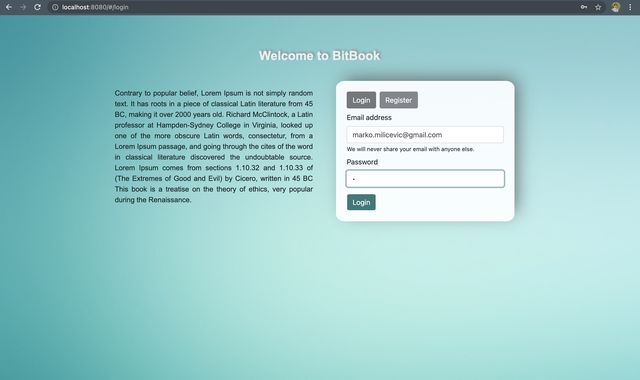

Marko Milicevic
Cloud Ops Support Engineer
* Expert at Technical and Client Support remotely [Servers, MPC, PC, product, app, Hardware, Software]
* Programmer, with a degree in Management and Engineering in IT
* Good knowledge of JavaScript, Python
* Good knowledge of Object-Oriented concepts / Design patterns
* Self-motivated to explore new technologies
* Strong knowledge of network and web application
BitBook
Application by BlueTeam Simple Facebook-inspired social network app, written in React.js, as a final project for the javaScript course at the Belgrade Institute of Technology. The app supports registering/logging in, creating and editing a profile, a profile search function, posting and deleting new text, image and video posts, as well as commenting. The central page is the feed, which shows all the posts by all the users (which can be filtered by type) and utilizes infinite scroll. The design is fully responsive and based on Bootstrap.
BitBook
Simular app to facebook built in React, I was a Frontend Developer
View project / case studyWork Experience of 5 years
Optional paragraph for work experience summary. Not a part of the job details. Delete if not being used.
Cloud Support Engineer
QUMU
Apr 2021
Research and replication of problems, perform analysis of the root cause of problems and provide technical assistance to the Technical Support Engineers * Design, development, documentation, testing, calibration, troubleshooting and preventative maintenance * Ability to work independently, learn quickly and be proactive * Proven problem-solving ability in both business and technical environments * Ensure that information and technical assistance is provided to customers, Professional Services and Partners in a professional, timely and accurate manner in accordance with established policies & procedures * Work closely with other teams through product lifecycle including Engineering, Professional Services, Quality Assurance and Product Management * Provide productive product improvement feedback to internal departments to promote product usability and to reduce the reoccurrence of customer problems * Drive collaboration with the Engineering Departments
Technology && Skill:
- Troubleshooting
- Network and System Administration
- HTTP, TCP/IP and UDP
- HTML, CSS, JavaScript
- Developer Console
- Ticket and Client Issue
Management and Engineering in IT
FAM - Faculty for management
Bachelor's degree, 2015-2019
Four years of study, Management in Information and Technology also continuously, through different courses, working on programming skills soft skills English skills. On my graduation, I was building a fully functional app in React build is as an Example of React framework meant to explore the reasons why Facebook integrated this type of technology into its app.